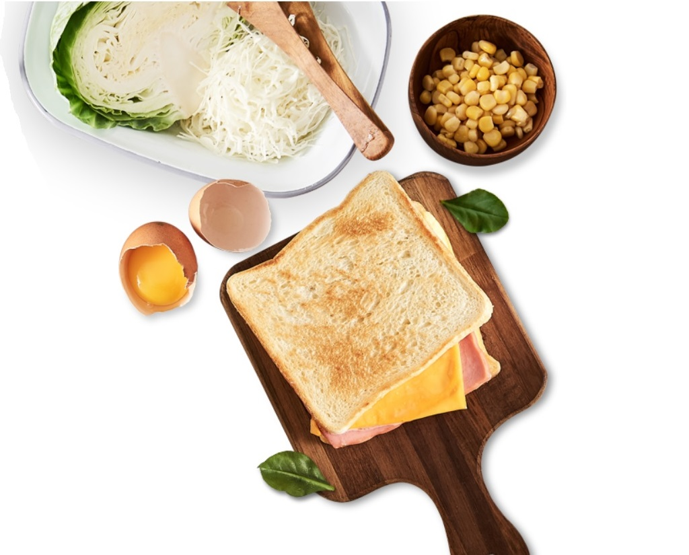
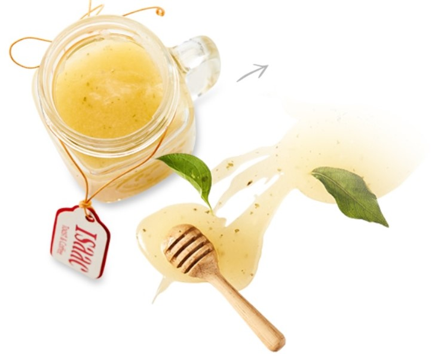

ISAAC STORY

17년차 대한민국 토종 브랜드
800여 개 매장을 가진
800여 개 매장을 가진
대한민국 NO.1
토스트 브랜드
토스트 브랜드
이삭토스트는 1995년 개인사업을 시작으로 2003년 가맹사업을 시작하여
㈜이삭 본사의 윤리적 경영 및 상생의 철학 아래 운영되는
대한민국 토스트 1위 브랜드 입니다.
㈜이삭 본사의 윤리적 경영 및 상생의 철학 아래 운영되는
대한민국 토스트 1위 브랜드 입니다.
2019년 전국 800여 개 이삭토스트 매장에서는 주문즉시 갓 구워내는 토스트에
100% 아라비카 원두로 내린 더블샷 커피, 다양한 음료군을 통해
고객님들과 만나고 있습니다.
100% 아라비카 원두로 내린 더블샷 커피, 다양한 음료군을 통해
고객님들과 만나고 있습니다.
Sauce
이삭토스트는 고유한 달콤한 소스를 직접 개발, 사용함으로써
차별화 된 맛을 자랑합니다.
이삭토스트는 고유한 달콤한 소스를 직접 개발, 사용함으로써
차별화 된 맛을 자랑합니다.

Coffee
신선한 100% 아라비카 생두를 직접 로스팅하여
언제나 향긋하고 신선한 커피를 즐길 수 있습니다.
신선한 100% 아라비카 생두를 직접 로스팅하여
언제나 향긋하고 신선한 커피를 즐길 수 있습니다.